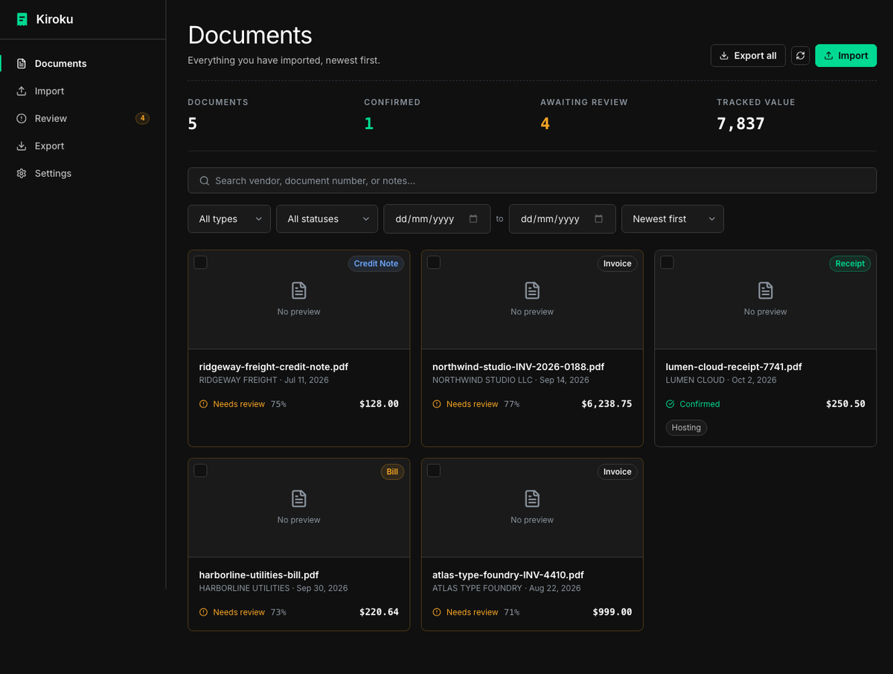

Kiroku (記録, “records”) turns a folder of invoices, receipts, and bills into searchable, exportable financial records. It reads the vendor, dates, and amounts off each document, flags whatever it is unsure about, and hands you a CSV your accountant can open.

Pulls text straight out of PDFs, and falls back to OCR for scans and phone photos. Extracts vendor, document number, dates, currency, subtotal, tax, and total.
Every field carries a confidence score. Anything uncertain goes to a review queue instead of your books, and the document view warns when subtotal and tax do not add up to the total.
Exact duplicates by file hash, and probable ones by matching vendor, amount, and date within a week — so the same bill does not get filed twice.
Full-text search across vendors, document numbers, and notes, with filters for type, status, date range, and amount.
A fixed, documented schema in UTF-8 RFC-4180 CSV. Filter by date range, type, or confirmed-only before you download.
If a value cannot be read, the field stays empty and the document waits for you. Nothing is guessed to make the output look complete.
You need Python 3.11+, Node 18+, and — for scanned documents — Tesseract and Poppler.
# clone, then: python3 -m venv venv && source venv/bin/activate pip install -r backend/requirements.txt cd frontend && npm install && npm run build && cd .. python run.py # opens http://127.0.0.1:8000
An optional zero-shot classifier (backend/requirements-ml.txt) improves
document-type detection. It downloads roughly 250 MB of model weights from the Hugging
Face Hub on first use, then runs offline. Skip it and classification falls back to
keywords with no network access at all.
Kiroku is a local tool, not a service. Worth knowing before you rely on it: